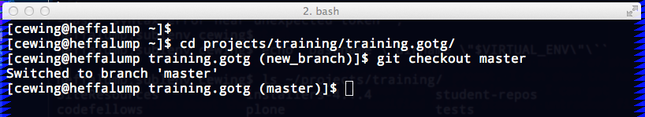
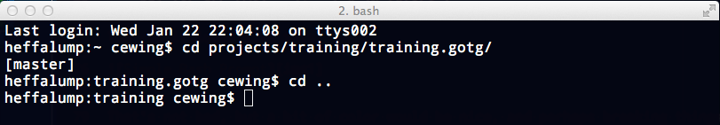

As a working developer, you end up with a lot of projects. Even with tab
completion its a chore to remember which branch is checked out, how far ahead
or behind the remote you are, and so on.
Enter git-prompt. Again, you place this code in your home directory, and
then source it from your shell startup file:
Once you do this you can use the __git_ps1 shell command and a number of
shell variables to configure PS1 and change your shell prompt. You can show
the name of the current branch of a repository when you are in one. You can
get information about the status of HEAD, modified files, stashes, untracked
files and more.
There's two ways to do this. The first is to use __git_ps1 as a command
directly in a PS1 expression in your shell startup file:
export PS1='[\u@\h \W$(__git_ps1 " (%s)")]\$ '
The result looks like this:

That's not bad, but a bit of color would be nice, and perhaps breaking things
onto more than one line so you can parse what you're seeing more easily would
be helpful.
For that, you'll need to change strategies. The __git_ps1 command can be
used as a single element in the expression for PS1. But it can also be
used itself as the PROMPT_COMMAND env variable (this command is for
bash, there's different one for zsh). If defined, this command will be
used to form PS1 dynamically.
When you use __git_ps1 in this way, a couple of things happen. First,
instead of taking only one optional argument (a format string), you can provide
two or optionally three arguments:
- The first will be prepended to the output of the command
- The second will be appended after
- The optional third argumment will be used as a format string for the output
of the command itself. If there is no output, it will not appear at all.
Combining these three elements can be very expressive. For example, A standard
OS X command prompt can be expressed like so: \h:\W \u\\\$ ``. If you use this
expression as the second argument, leave the first empty and provide a simple format
ending in a newline for the ``__git_ps1 output, you get some nice results.
Enter this in your shell startup file:
PROMPT_COMMAND='__git_ps1 "" "\h:\W \u\\\$ " "[%s]\n"'
That produces a nice two-line prompt that appears when you're in a git repo, and
disappears when you're not:

You can also play with setting a few environment variables in your shell
startup file to expand this further. For example, colorizing the output and
providing information about the state of a repo:
GIT_PS1_SHOWDIRTYSTATE=1
GIT_PS1_SHOWCOLORHINTS=1
GIT_PS1_SHOWSTASHSTATE=1
GIT_PS1_SHOWUPSTREAM="auto"
PROMPT_COMMAND='__git_ps1 "" "\h:\W \u\\\$ " "[%s]\n"'
Not half bad at all.